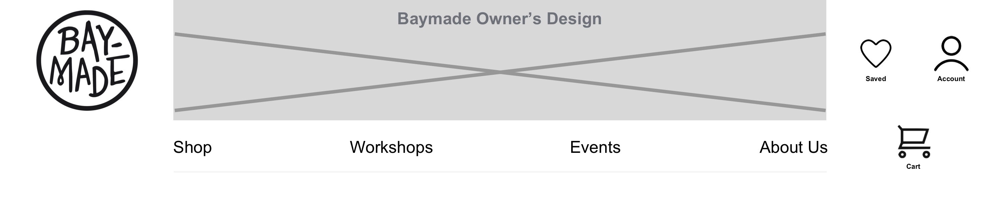

Efficient e-commerce desktop navigation experience for local brick and mortar business
A local business, Baymade, needs to stay in competition and wants to introduce an e-commerce shopping experience to their customers while still maintaining their local vibe.
Confusing navigation and content arrangement
"Careful Critic" shoppers already have a comprehensive checklist of criteria to go through to determine the quality of a purchase but the current navigation and organization alone leaves them feeling confused and frustrated. They need a less exhaustive and satisfying method to finding and getting to trust and purchase Baymade's listed merchandise.
Pave a Happy Path to an Organized Showroom
By changing the information architecture of the website and providing a consistent pattern and hierarchy across the various criteria the "careful critic" requires to make a purchase, the target user will be able to analyze products more efficiently and effectively and thereby be more likely to get to the checkout flow. This can potentially not only increase revenue but also increase foot traffic to the store as well.
Baymade
Baymade is a retail gift shop and gallery seeking to connect local artists to their community. They sell anything from locally made arts to crafts to even workshops and classes and also allows their clients to make reservations for private events. They are out to "inspire people to make something of their own” and "act a a functional permanent local art and crafts fair”.
Careful Critic
Most important thing is QUALITY. They seek out familiar brands and, before making a purchase, they need to be able to take their time to shop, read and write reviews, analyze descriptions and details such as manufacturing standards and materials, and compare multiple items.
Opening doors of inspiration through empathic design
One approach that worked well on this project was really understanding my target user and internalizing what matters to them. In doing so, I was able to understand the complex journey my target user must overcome in order to commit to trusting and purchasing something which enabled me to design accordingly.
Main points of interest to the target user were too hidden
New navigation makes points of interest more findable
Less time finding = More time buying
Users, during usability testing, noted being satisfied with the layout of the information provided and further, while uncharacteristic of my target user, many users during usability testing demonstrated the check-out of an item in under 60 seconds from home page to product analysis to checkout confirmation page.
Card Sort
My design decisions for this sprint were based off of usability findings and identified pain-points in the navigation of the existing website. Ideally, a card sorting exercise to dictate my new information architecture and site map would be my next step to either confirm my design decisions or adjust them to what the users would anticipate to find.
Recruitment
Usability testing with users identifying as consistent as possible with my target user, the "careful critic" shopper, would yield more accurate results of the satisfaction and effectiveness of the prototype.